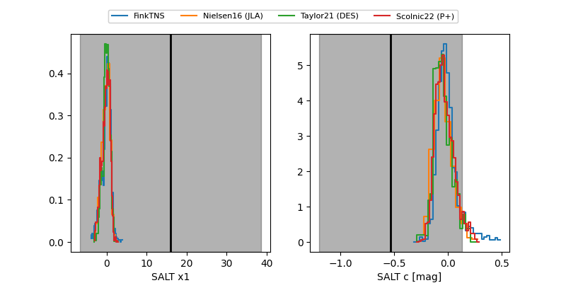

FINK: ZTF25abtfrtx
Lasair: ZTF25abtfrtx
ALeRCE: ZTF25abtfrtx
ZTF25abtfrtx (ztf,fink)
equatorial (ra, dec) = (71.5224,+75.21880)
galactic (l, b) = (136.2429,+18.83269)

last ztfr=20.56
2 ztfr detections